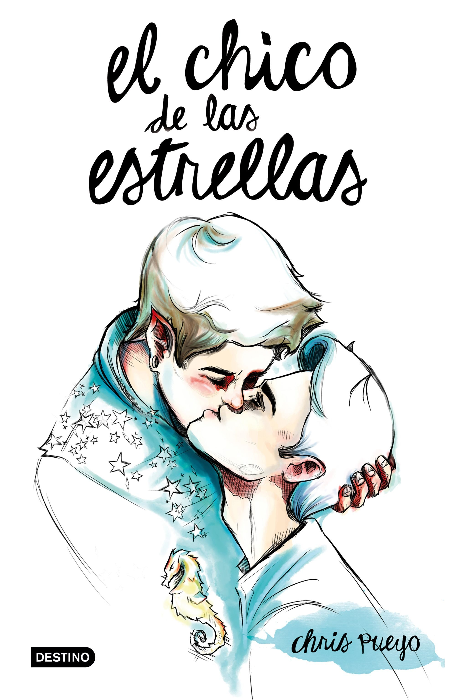

| Startsida | Utan att släppa taget | El chico de las estrellas | Kontakta mig |
 |
El Chico De Las Estrellas Översatt namn - Pojken Från Sjärnorna Författare Chris Pueyo Synopsis Det fanns en pojke som aldrig bodde mer än två år i rad i samma hus, så han bestämde sig för att måla väggarna i alla sina rum med stjärnor. Hans avslag på skolan och en ovanlig familj kommer att driva honom för att påbörja en resa där inte allt kommer att vara i gruppering och be om önskningar från månen. Det är dags att gå ner i leran, göra ett misstag med en prinsessa och hittae till slut en prins ... eller inte? Din önskan om frihet, tre överlevnads motgift och silver stövlar kommer att följa med dig genom en död värld där drömmar kommer barfota och förvirrad till ingenstans. Varför rekommenderar jag den? ♥♥♥♥ Även med denna boken är det väldigt svårt att förklara varför jag rekommenderade den här. Men jag kan förklara lite kort varför jag läste en HBTQ-bok. Eftersom jag aldrig hade någonting mot någon som älskar någon med samma kön som personen har (kanske du också har inget emot de) och det är därför jag blev intresserad av boken när jag hade läst synopsis och lite av omslaget även. Jag läste boken non stopp, men jag har inte läst de tre sista kapitelen än (så jag vet inte riktigt hur den slutar v( ‘.’ )v). |
Om du vill se trailer om boken så får du ser den här. ⇟⇩↡⇣↡⇩⇟ Den är på spanska, men trailer pratar/säger inte så mycket, så du kan få en ideé om boken utan att kunna jättemycket spanska innan. Men jag hoppas att du kan hitta den på ditt språk, om du får ett stort intresse att läsa den någon dag. (>‿◠)✌ |